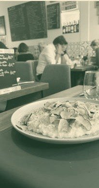

La maison
Le seul menu, c'est la craie.
Chez Gino, il n'y a jamais eu de carte imprimée. Ce qui se cuisine chaque jour est écrit à la main sur une ardoise, en salle — et c'est cette même ardoise qui est postée sur Facebook. La carte change tous les jours, selon le marché.
La cuisine est ouverte à l'arrière de la salle : on voit tourner les plats. Gino accueille souvent lui-même les tables et prend le temps d'expliquer ce qu'il y a au tableau — un vrai savoir-faire de la restauration à Luxembourg, mis directement sous les yeux des clients.
Cuisine ouverte
Ardoise quotidienne
Pâtes fraîches
Sans gluten dispo
